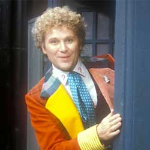

| Home | The Doctors | The Companions | The Villains |
|
|||
| cf
The Sixth DoctorNever understated, the Sixth Doctor was an explosion of colours, words and emotions. Passionate, sometimes quick to anger, this was a Doctor you did not want to make enemies with. He tangled with the corporate greed of the slimy Sil, took H.G. Wells on a trip to a strange world of Morlox and time machines, and defeated the amoral Gallifreyan scientist known only as the Rani. Once again, the Doctor’s interference in the affairs of other worlds resulted in a trial by his own people, and his own darker side, “The Valeyard” – who stood to gain all his remaining incarnations. After uncovering the Valeyard’s schemes, all charges were dropped, and the Doctor and Mel headed off in the TARDIS. |